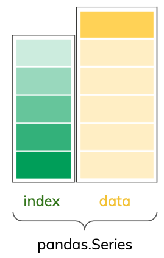
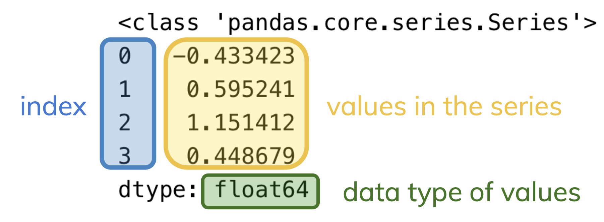
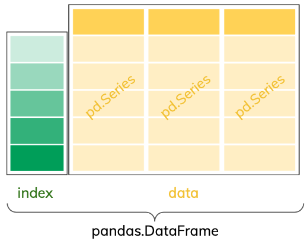

import pandas as pd
import numpy as np1 pandas series and data frames
In this lesson we introduce the two core objects in the pandas library, the pandas.Series and the pandas.DataFrame. The overall goal is to gain familiarity with these two objects, understand their relation to each other, and review Python data structures such as dictionaries and lists.
Learning objectives
By the end of this lesson, students will be able to:
- Explain the relation between
pandas.Seriesandpandas.DataFrame - Construct simple
pandas.Seriesandpandas.DataFramefrom scratch using different initalization methods - Perform simple operations on
pandas.Series - Navigate the
pandasdocumentation to look for attributes and methods ofpandas.Seriesandpandas.DataFrame
pandas
pandas [1] [2] is a Python package to wrangle and analyze tabular data. It is built on top of NumPy and has become the core tool for doing data analysis in Python.
The standard abbreviation for pandas is pd. Here we will import it together with NumPy:
Convention: importing packages
Always import all your packages in a single cell at the top of you notebook! Following the PEP 8 - Style Guide for Python Code [3], each package or library import should be in a separate line.
Series
The first core object of pandas is the series. A series is a one-dimensional array of indexed data.

A pandas.Series having an index is the main difference between a pandas.Series and a NumPy array. Let’s see the difference:
# A numpy array
arr = np.random.randn(4) # random values from std normal distribution
print(type(arr))
print(arr, "\n")
# A pandas series made from the previous array
s = pd.Series(arr)
print(type(s))
print(s)<class 'numpy.ndarray'>
[-0.11699598 0.6988026 -0.02075373 0.83663288]
<class 'pandas.core.series.Series'>
0 -0.116996
1 0.698803
2 -0.020754
3 0.836633
dtype: float64Notice the index is printed as part of the pandas.Series while, although the np.array is indexable, the index is not part of this data structure. Printing the pandas.Series also shows the values and their data type.

Creating a pandas.Series
The basic method to create a pandas.Series is to call
s = pd.Series(data, index=index)The data parameter can be:
- a list or NumPy array,
- a Python dictionary, or
- a single number, boolean (
True/False), or string.
The index parameter is optional, if we wish to include it, it must be a list of list of indices of the same length as data.
Example: Creating a pandas.Series from a NumPy array
Let’s create a pandas.Series from a NumPy array. To use this method we need to pass a NumPy array (or a list of objects that can be converted to NumPy types) as data. Here, we will also include the list [2023, 2024, 2025] to be used as an index:
# A series from a numpy array
pd.Series(np.arange(3), index=[2023, 2024, 2025])2023 0
2024 1
2025 2
dtype: int64Example: Creating a pandas.Series from a list
Here we create a pandas.Series from a list of strings. Remember that the index parameter is optional. If we don’t include it, the default is to make the index equal to [0,...,len(data)-1]. For example:
# A series from a list of strings with default index
pd.Series(['EDS 220', 'EDS 222', 'EDS 223', 'EDS 242'])0 EDS 220
1 EDS 222
2 EDS 223
3 EDS 242
dtype: objectExample: Creating a pandas.Series from a dictionary
Recall that a dictionary is a set of key-value pairs. If we create a pandas.Series via a dictionary the keys will become the index and the values the corresponding data.
# Construct dictionary
d = {'key_0':2, 'key_1':'3', 'key_2':5}
# Initialize series using a dictionary
pd.Series(d)key_0 2
key_1 3
key_2 5
dtype: objectdtype: object
Notice that in this and the previous example the data type of the values in the series is object. This data type in pandas usually indicates that the series is made up of strings. However, we can see in this example that the object data type can also indicate a mix of strings and numbers.
Example: Creating a pandas.Series from a single value
If we only provide a single number, boolean, or string as the data for the series, we need to provide an index. The value will be repeated to match the length of the index. Here, we create a series from a single float number with an index given by a list of strings:
pd.Series(3.0, index = ['A', 'B', 'C'])A 3.0
B 3.0
C 3.0
dtype: float64Simple operations
Arithmetic operations work on series and so most NumPy functions. For example:
# Define a series
s = pd.Series([98,73,65],index=['Andrea', 'Beth', 'Carolina'])
# Divide each element in series by 10
print(s /10, '\n')
# Take the exponential of each element in series
print(np.exp(s), '\n')
# Original series is unchanged
print(s)Andrea 9.8
Beth 7.3
Carolina 6.5
dtype: float64
Andrea 3.637971e+42
Beth 5.052394e+31
Carolina 1.694889e+28
dtype: float64
Andrea 98
Beth 73
Carolina 65
dtype: int64We can also produce new pandas.Series with True/False values indicating whether the elements in a series satisfy a condition or not:
s > 70Andrea True
Beth True
Carolina False
dtype: boolThis kind of simple conditions on pandas.Series will be key when we are selecting data from data frames.
Identifying missing values
In pandas we can represent a missing, NULL, or NA value with the float value numpy.nan, which stands for “not a number”. Let’s construct a small series with some NA values represented this way:
# Series with NAs in it
s = pd.Series([1, 2, np.nan, 4, np.nan])
s0 1.0
1 2.0
2 NaN
3 4.0
4 NaN
dtype: float64Notice the data type of the values it he series is still float64.
The hasnans attribute for a pandas.Series returns True if there are any NA values in it and false otherwise:
# Check if series has NAs
s.hasnansTrueAfter detecting there are Na values, we might be intersted in knowing which elements in the series are NAs. We can do this using the isna method:
s.isna()0 False
1 False
2 True
3 False
4 True
dtype: boolThe ouput is a pandas.Series of boolean values indicating if an element in the row at the given index is np.nan (True = is NA) or not (False = not NA).
Check-in
- The integer number -999 is often used to represent missing values. Create a
pandas.Seriesnamedswith four integer values, two of which are -999. The index of this series should be the the letters A through D.
- In the
pandas.Seriesdocumentation, look for the methodmask(). Use this method to update the seriessso that the -999 values are replaced by NA values. HINT: check the first example in the method’s documentation.
There’s much more to say about pandas.Series, but this is enough to get us going. At this point, we mainly want to know about pandas.Series because pandas.Series are the columns of a pandas.DataFrame.
Data frames
The pandas.DataFrame is the most used pandas object. It represents tabular data and we can think of it as a spreadhseet. Each column of a pandas.DataFrame is a pandas.Series.

Creating a pandas.DataFrame
There are many ways of creating a pandas.DataFrame. We present one simple one in this section.
We already mentioned each column of a pandas.DataFrame is a pandas.Series. In fact, the pandas.DataFrame is a dictionary of pandas.Series, with each column name being the key and the column values being the key’s value. Thus, we can create a pandas.DataFrame in this way:
# Initialize dictionary with columns' data
d = {'col_name_1' : pd.Series(np.arange(3)),
'col_name_2' : pd.Series([3.1, 3.2, 3.3]),
}
# Create data frame
df = pd.DataFrame(d)
df| col_name_1 | col_name_2 | |
|---|---|---|
| 0 | 0 | 3.1 |
| 1 | 1 | 3.2 |
| 2 | 2 | 3.3 |
We can change the index by changing the index attribute in the data frame:
# Change index
df.index = ['a','b','c']
df| col_name_1 | col_name_2 | |
|---|---|---|
| a | 0 | 3.1 |
| b | 1 | 3.2 |
| c | 2 | 3.3 |
Check-in
We can access the data frame’s column names via the columns attribute. Update the column names to C1 and C2 by updating this attribute.
Next
Jump to the week 1 discussion section to practice preliminary data exploration with a real world dataset. Then, continue with the next lesson on subsetting data frames.
References
[1]
T. pandas development team, “Pandas-dev/pandas: pandas.” Zenodo, Feb. 2020. doi: 10.5281/zenodo.3509134. Available: https://doi.org/10.5281/zenodo.3509134
[2]
Wes McKinney, “Data Structures for Statistical Computing in Python,” in Proceedings of the 9th Python in Science Conference, Stéfan van der Walt and Jarrod Millman, Eds., 2010, pp. 56–61. doi: 10.25080/Majora-92bf1922-00a
[3]
G. van Rossum, B. Warsaw, and N. Coghlan, “Style guide for Python code,” PEP 8, 2001. Available: https://www.python.org/dev/peps/pep-0008/